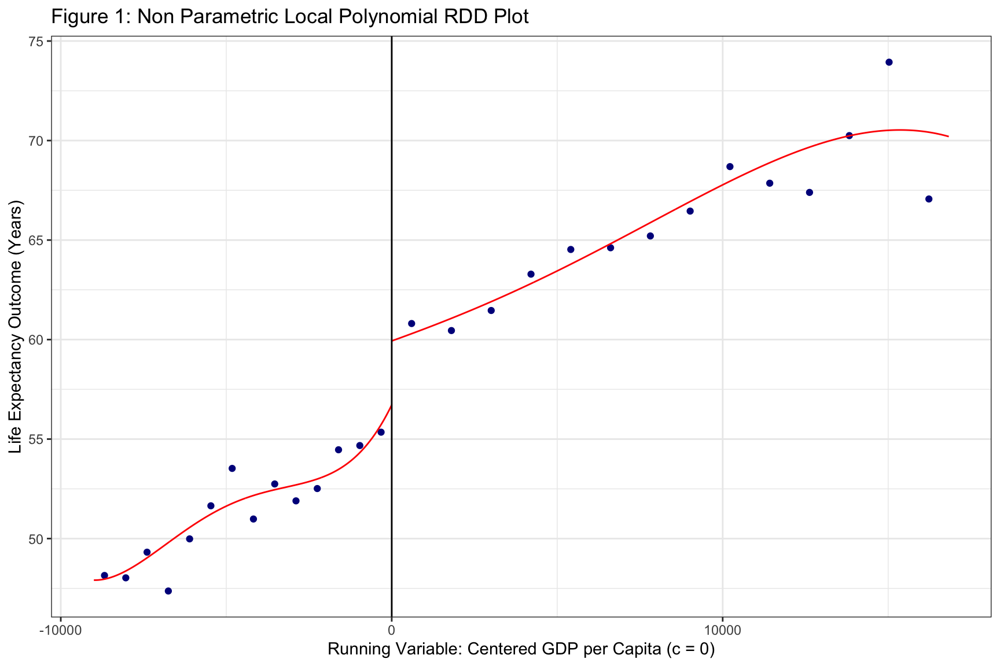
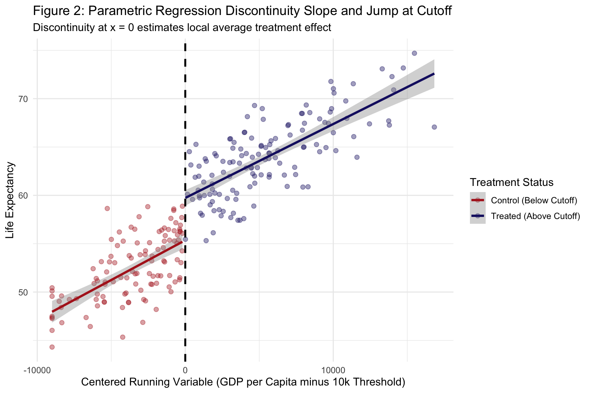
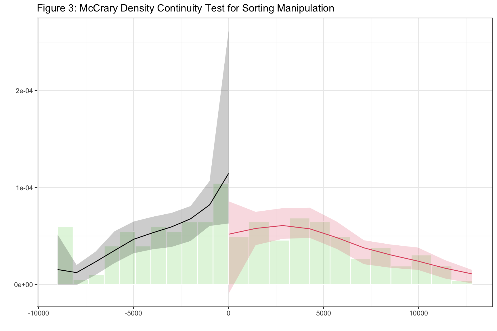

Sharp and Fuzzy Threshold Dynamics, Optimal Bandwidth Selection and Local Linear Regression
Author
Neena Abimbola Albarus
1. Theoretical Foundations and Methodological Overview
Regression discontinuity design is one of the most credible quasi-experimental strategies in the social sciences. The idea is elegant. When treatment is assigned by a deterministic rule based on a continuous running variable, units just above and just below the cutoff are essentially identical in every way except for their treatment status. Comparing outcomes in a narrow window around the cutoff therefore mimics the comparison that a randomized experiment would produce, at least locally.
Two flavors dominate the literature. Sharp RDD applies when treatment status is a deterministic function of the running variable, meaning every unit above the threshold receives the treatment and every unit below does not. Fuzzy RDD applies when the probability of treatment jumps at the cutoff but does not go from zero to one, such as when crossing the threshold makes a program available but not mandatory. Fuzzy designs require instrumental variables logic, with the threshold serving as the instrument.
The identifying assumption is continuity. In the absence of treatment, the outcome must evolve smoothly through the cutoff. Anything that jumps discontinuously at the threshold is attributed to the treatment. In this workbook, we construct a sharp RDD in which a synthetic policy raises life expectancy by exactly 4.5 years for countries above a GDP per capita threshold of 10,000 dollars. We then estimate the effect using parametric OLS, non parametric local polynomial regression, and run the McCrary density test to check for manipulation of the running variable.
⚠️ Common Pitfalls
Using a polynomial of high order in the running variable. Higher order polynomials produce noisy estimates at the boundary, which is exactly where the RDD estimate lives. Local linear regression with a data driven bandwidth is almost always preferred.
Ignoring the density test. If units can manipulate their position relative to the cutoff, the continuity assumption fails and the RDD estimate is not credible. The McCrary test is the standard check.
Reporting the RDD estimate without a bandwidth sensitivity analysis. The estimate depends on the bandwidth, and a credible analysis shows the estimate is stable across a reasonable range of bandwidths.
2. Data Pipeline and Sharp RDD Running Variable Construct
Before estimating anything, we locate the OWID data, filter to a single cross section, and construct a synthetic running variable, treatment indicator, and outcome. The synthetic construction lets us verify that the estimators recover the true treatment effect of 4.5 years.
# Dynamic path resolution across common working directoriespossible_paths <-c("../data/life_expectancy_data.csv","data/life_expectancy_data.csv","../../data/life_expectancy_data.csv","/Users/yawdgyal/Desktop/R for github/data/life_expectancy_data.csv","/Users/yawdgyal/Desktop/R for github/workbooks/data/life_expectancy_data.csv")data_path <- possible_paths[file.exists(possible_paths)][1]if (is.na(data_path) ||length(data_path) ==0) {stop("Could not locate 'life_expectancy_data.csv'. ","Searched the following paths:\n",paste(possible_paths, collapse ="\n") )}message("Loading data from: ", data_path)owid_raw <-read_csv(data_path, show_col_types =FALSE)message("Raw column names: ", paste(names(owid_raw), collapse =", "))# Robust renaming that tolerates any common source formatrename_owid <-function(df) { nm <-names(df) new_names <- nm new_names[nm %in%c("Entity", "entity", "country")] <-"country" new_names[nm %in%c("Code", "code", "iso_code")] <-"code" new_names[nm %in%c("Year", "year")] <-"year" life_candidates <-c("Life expectancy", "life_expectancy","Life Expectancy", "life expectancy" ) new_names[nm %in% life_candidates] <-"life_exp"names(df) <- new_names df}owid_df <-rename_owid(owid_raw)message("Renamed column names: ", paste(names(owid_df), collapse =", "))# Confirm the required columns exist before proceedingrequired_cols <-c("country", "year", "life_exp")missing_cols <-setdiff(required_cols, names(owid_df))if (length(missing_cols) >0) {stop("The following required columns are missing after renaming: ",paste(missing_cols, collapse =", "),"\nAvailable columns: ",paste(names(owid_df), collapse =", ") )}# Construct the synthetic sharp RDD frameworkset.seed(2026)cutoff_val <-10000rdd_df <- owid_df %>%filter(!is.na(life_exp), year ==2015) %>%mutate(gdp_pc =pmax(1000, rnorm(n(), mean =11000, sd =6000)),running_x = gdp_pc - cutoff_val,treatment_d =if_else(running_x >=0, 1, 0),life_exp_sim =55+0.0008* running_x +4.5* treatment_d +rnorm(n(), mean =0, sd =2.5) ) %>%drop_na()glimpse(rdd_df)
What is happening here: The possible_paths vector lets the workbook run from multiple working directories. We read the OWID CSV, print the raw column names for diagnostics, then use a rename_owid() helper to standardize the column names regardless of the source format. A pre flight check verifies that country, year, and life_exp exist after renaming, and stops with a clear message if any are missing. We then construct three variables. gdp_pc is a synthetic GDP per capita drawn from a normal distribution. running_x is that value centered at the 10,000 dollar threshold, so the cutoff sits at zero. treatment_d is the treatment indicator, set to 1 for every country above the threshold. life_exp_sim is the outcome, built with a small linear trend in the running variable and a discrete jump of 4.5 years at the cutoff. The true causal effect in this simulation is exactly 4.5 years.
⚠️ Common Pitfalls
Confusing the synthetic running variable with real GDP. The gdp_pc column here is generated randomly and is unrelated to the real economic conditions of the countries in the sample. The exercise is a demonstration of the workflow, not a substantive finding.
Forgetting to center the running variable. The RDD estimator identifies the effect at the cutoff. If the running variable is not centered, the cutoff value must be passed explicitly to every estimator. Centering at zero simplifies the code and reduces the chance of error.
Choosing the cutoff arbitrarily. In real applications, the threshold is a documented feature of the policy or program. If the cutoff is chosen to maximize the estimated effect, the analysis is not credible.
3. RDD Estimation: Parametric OLS and Non Parametric rdrobust
With the synthetic RDD in hand, we estimate the treatment effect in two ways. The parametric OLS regression fits a linear slope on each side of the cutoff plus a dummy for the treatment. The rdrobust function implements the Calonico, Cattaneo, and Titiunik optimal bandwidth local polynomial estimator, which is the modern standard in applied work.
# Parametric OLS with interaction slopemod_ols_rdd <-lm(life_exp_sim ~ running_x * treatment_d, data = rdd_df)modelsummary(list("Parametric RDD (OLS)"= mod_ols_rdd),stars =TRUE,gof_omit ="IC|Log|F")
Parametric RDD (OLS)
+ p < 0.1, * p < 0.05, ** p < 0.01, *** p < 0.001
(Intercept)
55.358***
(0.425)
running_x
0.001***
(0.000)
treatment_d
4.373***
(0.588)
running_x × treatment_d
-0.000
(0.000)
Num.Obs.
246
R2
0.849
R2 Adj.
0.847
RMSE
2.65
# Non parametric local polynomial RDD with optimal bandwidthrd_fit <-rdrobust(y = rdd_df$life_exp_sim,x = rdd_df$running_x,c =0)summary(rd_fit)
Call: rdrobust
Sharp RD estimates using local polynomial regression.
Number of Obs. 246
BW type mserd
Kernel Triangular
VCE method NN
Left Right
Number of Obs. 112 134
Eff. Number of Obs. 56 42
Order est. (p) 1 1
Order bias (q) 2 2
BW est. (h) 3142.561 3142.561
BW bias (b) 5281.094 5281.094
rho (h/b) 0.595 0.595
Unique Obs. 105 134
=====================================================================
Point Robust Inference
Estimate z P>|z| [ 95% C.I. ]
---------------------------------------------------------------------
RD Effect 4.701 2.646 0.008 [1.229 , 8.255]
=====================================================================
# McCrary density test for manipulation of the running variabledensity_test <-rddensity(X = rdd_df$running_x, c =0)summary(density_test)
Manipulation testing using local polynomial density estimation.
Number of obs = 246
Model = unrestricted
Kernel = triangular
BW method = estimated
VCE method = jackknife
c = 0 Left of c Right of c
Number of obs 112 134
Eff. Number of obs 59 60
Order est. (p) 2 2
Order bias (q) 3 3
BW est. (h) 3378.403 4270.618
Method T P > |T|
Robust -2.1264 0.0335
What is happening here: The OLS regression includes the running variable, the treatment indicator, and their interaction. The interaction term allows the slope to differ on each side of the cutoff, which is the standard way to write a linear RDD. The coefficient on treatment_d is the estimated jump at the cutoff. The rdrobust() function takes the outcome, the running variable, and the cutoff, then automatically chooses an optimal bandwidth using a data driven procedure and estimates the treatment effect using local linear regression within that bandwidth. The summary() output reports the conventional, bias corrected, and robust estimates with their confidence intervals. Finally, the rddensity() function runs the McCrary test, which checks whether the density of the running variable is continuous at the cutoff. A significant result is evidence that units manipulated their position relative to the threshold.
⚠️ Common Pitfalls
Reading only the parametric OLS coefficient. The parametric estimate uses all observations, including units far from the cutoff, which introduces bias. The non parametric estimate from rdrobust is the preferred one in modern practice.
Forgetting the interaction term in the parametric model. If you run lm(y ~ running_x + treatment_d) without the interaction, you are forcing the slope to be identical on both sides of the cutoff, which is a strong and often unjustified restriction.
Interpreting the density test p value too strongly. A p value above 0.05 is consistent with continuity, but the test has low power in small samples. It cannot prove that no manipulation occurred, only that the data does not reveal it.
4. Diagnostic Visualizations
The three figures below show the non parametric local polynomial fit, the parametric linear fit with the discrete jump, and the McCrary density test. Together they tell the story of whether the RDD is credible and how large the treatment effect appears to be.
Figure 1: Non Parametric Local Polynomial RDD Plot
fig1 <-rdplot(y = rdd_df$life_exp_sim,x = rdd_df$running_x,c =0,title ="Figure 1: Non Parametric Local Polynomial RDD Plot",x.label ="Running Variable: Centered GDP per Capita (c = 0)",y.label ="Life Expectancy Outcome (Years)")

print(fig1)
Call: rdplot
Number of Obs. 246
Kernel Uniform
Bin Method mimicking variance evenly-spaced method using spacings estimators
Left Right
Number of Obs. 112 134
Eff. Number of Obs. 112 134
Order poly. fit (p) 4 4
BW poly. fit (h) 9000.000 16832.244
Number of bins scale 1.000 1.000
Bins Selected 14 14
How to read this figure: The plot shows binned averages of the outcome on either side of the cutoff, with a smooth local polynomial fit through each side. The vertical distance between the two fitted lines exactly at the cutoff is the estimated treatment effect. A visible jump with a clean local fit on each side is the visual signature of a credible sharp RDD.
🔑 Key Takeaway: A visible discontinuity at the cutoff with smooth fits on both sides is the classic RDD picture. If the fits are jagged or the jump is barely visible, the estimate is likely to be noisy or small. The plot is often more informative than the coefficient table because it shows the shape of the relationship across the entire range of the running variable.
Figure 2: Parametric Regression Discontinuity Slope and Jump
fig2 <-ggplot( rdd_df,aes(x = running_x, y = life_exp_sim, color =factor(treatment_d))) +geom_point(alpha =0.4, size =2) +geom_smooth(method ="lm", formula = y ~ x, se =TRUE, linewidth =1.2) +geom_vline(xintercept =0, linetype ="dashed",color ="black", linewidth =1 ) +scale_color_manual(values =c("0"="firebrick", "1"="midnightblue"),labels =c("Control (Below Cutoff)", "Treated (Above Cutoff)") ) +theme_minimal(base_size =12) +labs(title ="Figure 2: Parametric Regression Discontinuity Slope and Jump at Cutoff",subtitle ="Discontinuity at x = 0 estimates local average treatment effect",x ="Centered Running Variable (GDP per Capita minus 10k Threshold)",y ="Life Expectancy",color ="Treatment Status" )print(fig2)

How to read this figure: Each point is a country. The horizontal axis is the centered running variable, so the cutoff sits at zero. The color distinguishes treated units above the cutoff from control units below. The two regression lines fit the outcome separately on each side. The vertical distance between the endpoints of the two lines at the cutoff is the parametric estimate of the treatment effect.
🔑 Key Takeaway: The parametric fit is easy to read but relies on a linear functional form assumption. If the true relationship is curved, the linear fit will misstate the jump. That is why the non parametric fit in Figure 1 is the preferred visual for publication, and why the parametric version here is best used as a first pass or as a robustness check.
Figure 3: McCrary Running Variable Density Test
fig3 <-rdplotdensity(rdd = density_test,X = rdd_df$running_x,title ="Figure 3: McCrary Density Continuity Test for Sorting Manipulation")
print(fig3)
$Estl
Call: lpdensity
Sample size 112
Polynomial order for point estimation (p=) 2
Order of derivative estimated (v=) 1
Polynomial order for confidence interval (q=) 3
Kernel function triangular
Scaling factor 0.457142857142857
Bandwidth method user provided
Use summary(...) to show estimates.
$Estr
Call: lpdensity
Sample size 134
Polynomial order for point estimation (p=) 2
Order of derivative estimated (v=) 1
Polynomial order for confidence interval (q=) 3
Kernel function triangular
Scaling factor 0.546938775510204
Bandwidth method user provided
Use summary(...) to show estimates.
$Estplot

How to read this figure: The plot shows the estimated density of the running variable on each side of the cutoff. The solid curves are the estimated densities, and the shaded bands are their confidence intervals. The vertical dashed line marks the cutoff. If the two density curves meet smoothly at the cutoff, that is evidence against manipulation. If there is a visible jump or a suspicious gap, that is a red flag.
🔑 Key Takeaway: A smooth density through the cutoff is reassuring. A visible discontinuity suggests that units may have sorted themselves to one side of the threshold, which would invalidate the RDD. In policy settings where the threshold triggers a benefit, units have an obvious incentive to manipulate, so the density test should always be run and reported.
5. Putting It All Together
You now have a complete regression discontinuity workflow. You have constructed a synthetic sharp RDD with a known effect of 4.5 years, estimated the effect using parametric OLS and non parametric local polynomial regression, run the McCrary density test, and visualized the discontinuity in three complementary figures.
The core decision rule is straightforward. Reach for sharp RDD when treatment status is a deterministic function of the running variable, such as when a scholarship is awarded automatically to every student above a test score threshold. Reach for fuzzy RDD when the probability of treatment jumps at the cutoff but not from zero to one, such as when crossing the threshold makes a program available but not mandatory. Reach for non parametric local polynomial estimation with the rdrobust package as your primary specification, because it minimizes functional form bias. Reach for parametric OLS with a linear interaction as a robustness check and for readers who are more comfortable with regression tables.
The non parametric RDD plot, the parametric slope plot, and the McCrary density test are your primary reporting devices. Together they tell the reader whether the discontinuity is visible, how large it is, and whether the running variable can be trusted. Regression discontinuity design is one of the most credible identification strategies in the social science toolkit, and it delivers its credibility through transparency about the running variable and the cutoff. Taking the density test and the bandwidth sensitivity seriously is what separates a defensible RDD from a fragile one.